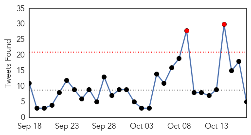
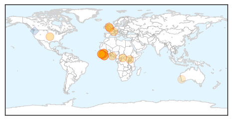

30 Day Trends
Web: 3 alerts, 0 warnings
Twitter: 2 alerts, 0 warnings
Top Articles:
- 1.000
- Return of Ebola concerning
- 1.000
- Condition of British Nurse Cafferkey remains critical as more is known about the Ebola virus in Sierra Leone
- 1.000
- Ebola-Driven Sexually Transmitted Diseases May Pose a Bigger Threat to Public Health Than The Actual Virus
- 1.000
- Two new cases in Guinea, one recovered
- 0.999
- So It Turns Out There's A Lot We Don't Know About Ebola
- 0.999
- Guinea reports two more Ebola cases; review sheds light on CNS complications
- 0.998
- First Effective Vaccine Against Ebola Could Soon Be a Reality
- 0.997
- ‘Two new Ebola cases in Guinea’
- 0.997
- Two new Ebola cases found in Guinea, dashing hopes
- 0.997
- Condition of hospitalized Ebola nurse in United Kingdom worsens
- 0.997
- Two new Ebola cases found in Guinea, dashing hopes
- 0.997
- Ebola survives in semen much longer than we thought
- 0.997
- How Perm Sec Wanted Leaving Health Ministry Fearing Ebola Resurgence
- 0.997
- Africa - News and Analysis
- 0.995
- Two new Ebola cases in Guinea show virus still spreading
- 0.994
- Ebola 'relapse' case in UK takes virus specialists to uncharted waters
- 0.979
- Ebola upgraded to STD status, found to be infectious for longer than previously thought
- 0.934
- Sexual transmission of Ebola virus in Liberia confirmed using genomic analysis
- 0.619
- Bishop thanks Pope Francis for being close during the Ebola crisis Vatican Radio
- 0.609
- Bishop thanks Pope Francis for being close during the Ebola crisis
- 0.579
- Time ticking on Lyme disease breakthrough
- 0.520
- Employee health focus of meeting
Top Tweets:
- 0.729
- An interesting development from Ebola crisis: What 1st case of sexually transmitted Ebola means for public health http://t.co/1H2NURqwqw
- 0.558
- Ebola Is Coming Back—But It Never Really Went Away - WIRED http://t.co/vobEi0OIoJ ebola EVD
- 0.524
- Govt Releases Final Lab Result On Calabar Ebola Scare - The Guardian Nigeria (satire) (press relea... http://t.co/NQUZrmV3m1 ebola EVD
- 0.502
- A Nigerian Ebola doctor could be the first black African to go to space - Quartz http://t.co/RsMwzTvuXr ebola EVD
- 0.502
- A Nigerian Ebola doctor could be the first black African to go to space - Quartz http://t.co/9VvQOrbu0z ebola EVD
Web/News Articles
Tweets
Article Locations
Article Confidences